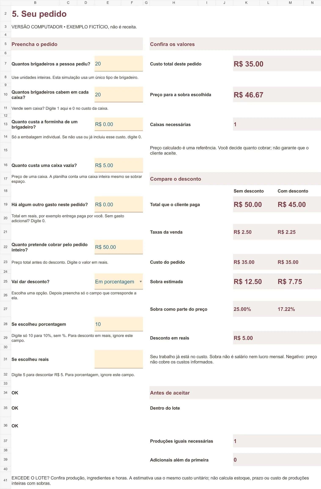

VOCÊ VENDE BRIGADEIROS POR ENCOMENDA?
10% de desconto.
38% a menos de sobra.
Neste exemplo, cobrar R$ 5 a menos reduz a sobra estimada em R$ 4,75.
Antes de confirmar o próximo pedido, confira o que sobra. Calcule o preço da sua encomenda de brigadeiros, com embalagem, trabalho e desconto na conta.
Google Planilhas + guia PDF + tutorial em vídeo.
Compra disponível no checkout Kiwify.
ANTES DE RESPONDER “POSSO DAR DESCONTO”
O cliente paga menos.
Seu custo não diminui junto.
Experimente alterar só o desconto. Você vê o efeito na mesma caixa, com os mesmos custos.
Valores ilustrativos, não são uma receita nem preços recomendados. O trabalho já está incluído no custo.
De 0 a 100%. Use vírgula ou ponto nos decimais. Preço original R$ 50, custo R$ 35 e taxa de 5%. Sem taxa fixa.
Sem desconto
- Cliente paga
- R$ 50,00
- Taxa informada
- R$ 2,50
- Custo do pedido
- R$ 35,00
- Sobra estimada
- R$ 12,50
Com desconto
- Cliente paga
- R$ 45,00
- Taxa informada
- R$ 2,25
- Custo do pedido
- R$ 35,00
- Sobra estimada
- R$ 7,75
Esta demonstração altera apenas o desconto. Na planilha, você informa seus ingredientes, rendimento, trabalho, embalagens e taxas. Sobra estimada não é salário nem lucro mensal.
A ENCOMENDA NÃO TERMINA NO INGREDIENTE
Vender a caixa não basta.
Confira se o preço cobre a conta.
Você sabe o que pagou no leite condensado. Mas a caixa, o tempo de produção e as unidades que ficaram para amostras também entram na conta.
Quando esses valores ficam espalhados, cada pedido exige refazer contas. E dar desconto sem conferir o custo muda a sobra que você esperava.
A calculadora reúne essas partes para você comparar o preço com os componentes à vista.
O CAMINHO LOTE AO PEDIDO
Cada encomenda começa
na sua produção.
- 01
Registre o lote
Ingredientes usados, tempo de trabalho e parcela dos outros gastos.
- 02
Conte o vendável
Separe o que produziu do que pode vender. Essa quantidade define o custo por unidade.
- 03
Monte a encomenda
Quantidade pedida, unidades por caixa, embalagens e gastos daquele pedido.
- 04
Compare o desconto
Veja preço de referência, taxas e sobra estimada, com e sem desconto.
VEJA A PLANILHA REAL
Você preenche os amarelos.
As fórmulas fazem as contas.
Perguntas diretas, medidas por extenso e etapas numeradas. Abaixo, a prévia local do arquivo que já foi desenvolvido.

Do custo ao desconto
Uma calculadora, cinco etapas. Até 20 ingredientes por análise, trabalho, rendimento vendável e embalagem por unidade e por caixa.
Há apresentações para celular e computador. São cópias independentes; escolha uma para cada pedido. Os dados não sincronizam automaticamente.
Comece com orientação
Guia pronto de seis páginas, com preenchimento, unidades, checklist de custos e exemplo para conferir os resultados.
Acompanhe na tela
Tutorial de uso em vídeo incluído no pacote.
Produto principal: calculadora em Google Planilhas, guia PDF e tutorial em vídeo.
UMA TAREFA BEM DEFINIDA
Para quem é
Você já produz brigadeiros por encomenda e quer reunir custos, montar o pedido e conferir o efeito de um desconto.
Você pode fazer uma conta própria ou usar ferramentas gratuitas. Aqui, o valor está no caminho organizado do lote vendável à caixa que vai entregar.
Para quem não é
Não atende quem busca receitas, clientes, controle de estoque, emissão de notas ou mistura de sabores no mesmo pedido.
Calcula uma composição por vez. O preço de referência usa os custos e a margem que você informa; a decisão de quanto cobrar continua sua.
ANTES DE RESPONDER AO PRÓXIMO PEDIDO
Confira os custos antes de dizer “fechado”.
Calculadora em Google Planilhas + guia PDF + tutorial em vídeo.
Pagamento único. É necessária uma conta Google para acessar o arquivo no Google Planilhas.
PREÇO DO PRODUTO PRINCIPAL
R$ 29,90pagamento únicoQuero conferir os custosCompra disponível no checkout Kiwify.
O preço calculado é uma referência baseada nos dados que você informa.
COMPRA PELO CHECKOUT KIWIFY
Confira a oferta e finalize sua compra.
O produto principal inclui a calculadora em Google Planilhas, o guia PDF e o tutorial em vídeo. O checkout apresenta o preço e as formas de pagamento. Após a aprovação, siga as instruções de acesso da Kiwify.
Ver o efeito do desconto ↑SEM COMPLICAR
Perguntas frequentes
Preciso saber mexer em fórmulas?
Você preenche os espaços amarelos e acompanha os resultados. As cinco etapas têm perguntas e orientações. O guia explica unidades, rateio e leitura da sobra.
Vou precisar de computador?
Existe uma apresentação estreita para celular e outra para computador. A calculadora está no Google Planilhas; no celular, use o app Google Planilhas, e no computador, abra pelo navegador. Uma conta Google é necessária. A cópia, edição e recálculo em aparelhos reais ainda precisam de validação.
O que vou receber?
O produto principal inclui a calculadora em Google Planilhas, um guia PDF de seis páginas e um tutorial de uso em vídeo. Não inclui receitas, consultoria contábil ou sistema de estoque.
A planilha define meu preço de venda?
Ela calcula um preço de referência com seus custos, taxas e margem informada. Você escolhe quanto cobrar. A ferramenta não prevê aceitação do cliente nem garante resultado financeiro.
Posso calcular vários sabores juntos?
Esta versão trabalha com uma composição de brigadeiro por análise. Para outra composição, faça outra cópia. Não calcula pedidos com mistura de sabores.
Como será o acesso depois do pagamento?
A compra é concluída no checkout Kiwify, e o acesso é apresentado após a aprovação do pagamento. O fluxo de liberação de cada arquivo ainda precisa ser conferido na área de membros. Esta página não expõe a planilha.
Tem garantia e reembolso?
A política planejada prevê solicitação de reembolso em sete dias, preservando os direitos legais aplicáveis. Condições, canal e contato serão preenchidos e confirmados antes das vendas; a política ainda não está ativa.
Como vou tirar dúvidas de uso?
O suporte previsto cobre acesso e uso básico. O e-mail real e o prazo de atendimento ainda serão definidos e publicados antes do lançamento.
Antes de aceitar o próximo pedido,
coloque os custos na conta.
Quero conferir minha encomendaR$ 29,90 · pagamento único